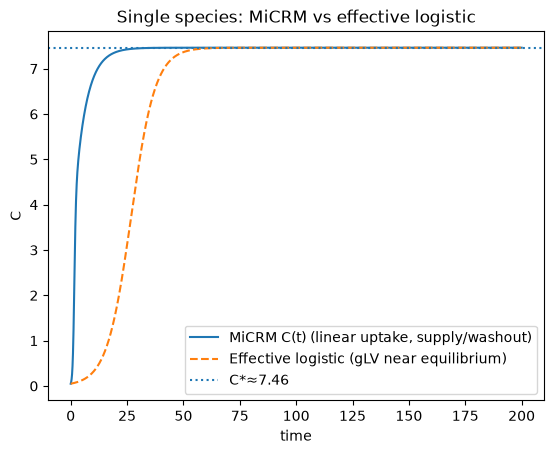
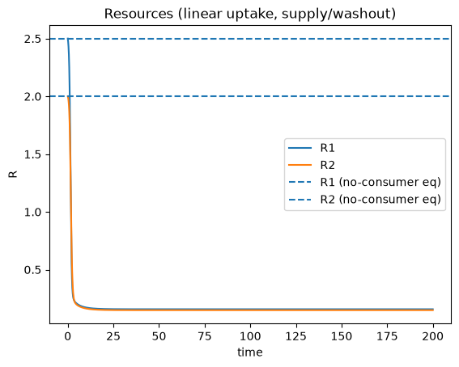
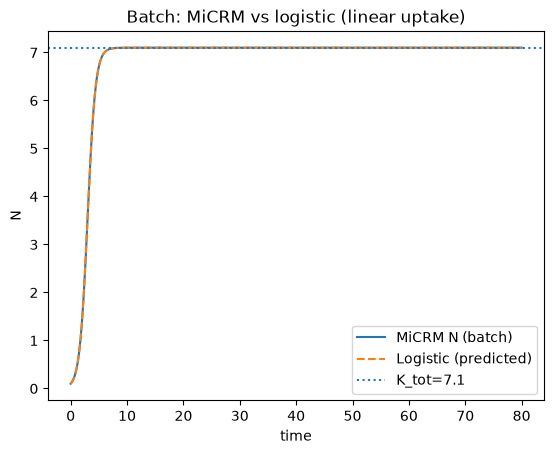
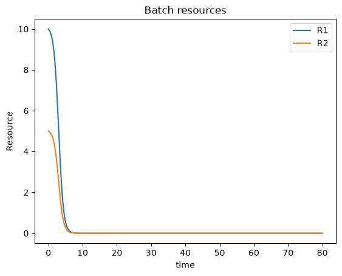
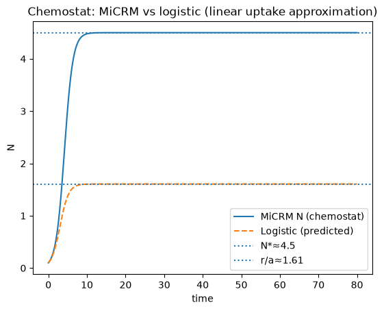
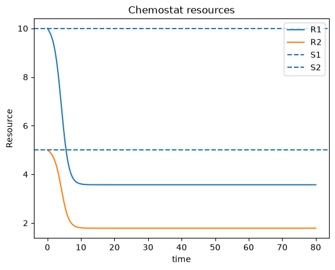
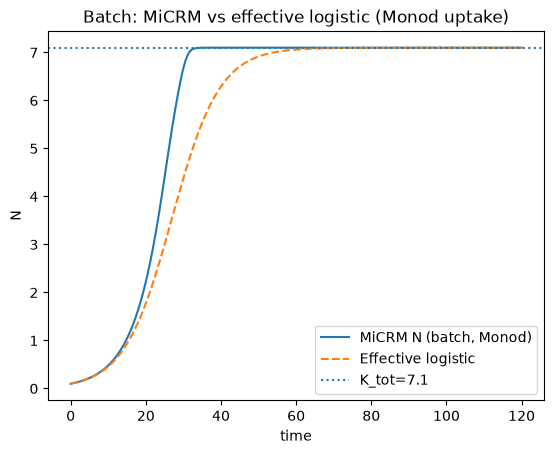
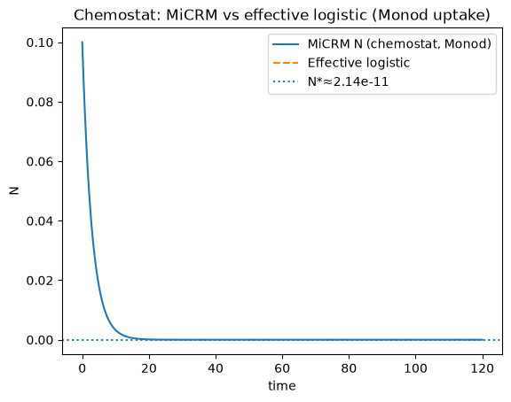

From consumer–resource dynamics to logistic growth#
This section shows how a mechanistic consumer–resource model (the MiCRM) can be approximated as a generalized Lotka–Volterra (gLV) model, and—when we keep only one population—into logistic growth.
MiCRM-style consumer–resource models are widely used in microbial ecology ([Marsland et al., 2019]; see also [Goldford et al., 2018]).
Logistic growth is a classical single‑population model dating back to Verhulst ([Verhulst, 1838]).
What you will learn#
How the gLV interaction coefficients arise from resource depletion (and, optionally, cross‑feeding).
Why the gLV approximation is local (valid near an equilibrium).
Why a one‑species gLV often becomes logistic growth (negative density dependence).
Where this fits in the course#
If you want more background as you read this notebook:
Logistic growth, equilibria, and stability: populations
Interactions and multi‑species dynamics: interactions
Microbial growth and chemostat ideas: microbial-growth
Maths details (linearization, Jacobians): appendix-maths
Model (MiCRM)#
We write consumer abundance/biomass as \(C_i(t)\) and resource concentrations as \(R_\alpha(t)\).
The standard MiCRM is
Interpretation (one clean way to read the symbols):
\(u_{i\alpha}\): uptake coefficient (a Type‑I / linear uptake assumption in \(R_\alpha\)).
\(\lambda_\alpha = \sum_\beta l_{\alpha\beta}\): total leakage fraction of consumed resource \(\alpha\).
\(\rho_\alpha\): resource supply term; \(\omega_\alpha\): resource washout/decay.
\(m_i\): maintenance (and may also include consumer washout).
\(l_{\beta\alpha}\): byproduct conversion matrix (cross‑feeding).
Roadmap:
Use a quasi‑steady resource approximation (time‑scale separation) to write \(R_\alpha \approx \hat R_\alpha(C)\).
Linearize near an equilibrium to obtain a gLV model.
Specialize to \(N=1\) to see the gLV becomes logistic growth under very general conditions.
Reminder: gLV form#
For \(N=1\): \(\dot C = C(r + a_{11}C)\), which is logistic when \(a_{11}<0\):
1) Effective gLV derivation from MiCRM (QSS + linearization)#
The key idea is: resources mediate interactions. If resources adjust quickly, we can eliminate them and get an approximate population‑only model.
The result is a local approximation: we linearize near a particular equilibrium, so the gLV coefficients are not “universal constants” for all states.
1.1 Quasi‑steady resources (time‑scale separation)#
Assume resources relax quickly compared to consumers, so (approximately)
Define the resource nullcline equations
Solving \(F_\alpha=0\) (implicitly) gives functions \(R_\alpha=\hat R_\alpha(C)\).
Substitute this into the consumer dynamics:
1.2 Linearize around an equilibrium#
Let \((\hat C,\hat R)\) be an equilibrium with \(\hat C_i>0\) for retained species; then \(G_i(\hat C)=0\).
First‑order (Taylor) expansion of the resource nullclines around \(\hat C\):
Insert this into \(G_i\) and collect terms to obtain a gLV model:
with
Interpretation:
\(a_{ij}\) encodes how changing \(C_j\) shifts equilibrium resources, which then changes \(C_i\)’s growth rate.
If more consumers reduce resources (\(\partial \hat R_\alpha/\partial C_j<0\)), you get competition (negative contributions to \(a_{ij}\)).
With leakage/cross‑feeding, some derivatives can be positive, creating facilitation.
1.3 Computing \(\partial \hat R/\partial C\) (Implicit Function Theorem)#
Differentiate \(F_\alpha(C,\hat R(C))=0\) with respect to \(C_j\):
Let \(D_{\alpha\gamma}=\partial F_\alpha/\partial R_\gamma\) evaluated at \((\hat C,\hat R)\). Then
If you want a refresher on this linear‑algebra/Jacobian view, see appendix-maths.
2) Special case: one species ⇒ logistic growth (effective \(r\) and \(a_{11}\))#
Now set \(N=1\) and drop species indices: biomass \(C(t)\), preferences \(u_\alpha\), maintenance \(m\).
This is the cleanest setting to see why logistic growth is such a common coarse‑grained approximation: if increasing \(C\) tends to reduce the resources the population relies on, you automatically get negative density dependence.
2.1 Logistic form#
The one‑species gLV approximation is
If \(a_{11}<0\), this is logistic: \(\dot C=rC-aC^2\) with \(a=-a_{11}>0\) and \(K=r/a\).
(For more on interpreting equilibria/stability in 1D models, see populations.)
2.2 General mapping from MiCRM#
From the gLV derivation,
So self‑limitation is expected whenever the dominant resources satisfy \(\partial \hat R_\alpha/\partial C<0\).
2.3 Closed-form example (no leakage)#
If \(l_{\beta\alpha}=0\) (hence \(\lambda_\alpha=0\)), resource QSS gives
Then
and therefore
So, in this simple no‑leakage case, the MiCRM guarantees negative density dependence for one population.
3) Numerical simulations#
Here we simulate a one‑species MiCRM with two resources and compare it to a fitted/predicted logistic curve.
We’ll do this in two “environments”:
Batch: no inflow/outflow (\(D=0\)). Resources are depleted.
Chemostat: constant dilution \(D>0\) with feed concentrations \(S\) (a standard continuous‑culture setup; see [Novick and Szilard, 1950]).
Workflow:
Define MiCRM ODEs and integrate with
scipy.integrate.solve_ivp.Compute effective \((r,a)\) from the mapping above (exact for some linear cases; approximate for Monod).
Compare time series for \(C(t)\) or \(N(t)\).
If you need a quick refresher on using SciPy ODE solvers and plotting, see python and microbial-growth.
3.1 Warm‑up simulation: linear uptake with supply + washout#
First we simulate a minimal one‑species, multi‑resource model with linear uptake proportional to \(CR_\alpha u_\alpha\) and a simple supply/washout term for resources.
This is the same mathematical structure as the no‑leakage example above, and it lets us check the mapping to logistic growth in a controlled setting.
We assume \(\rho_\alpha>0\) and \(\omega_\alpha>0\) so that resources have a well‑defined “resource‑only” equilibrium \(R_\alpha=\rho_\alpha/\omega_\alpha\) in the absence of consumers.
For no leakage:
In the code below we:
integrate the full \((C, R_1, R_2)\) system;
estimate the equilibrium \(\hat C\) numerically;
plug \(\hat C\) into the analytic formulas to get an effective \((r, a_{11})\);
compare \(C(t)\) to the corresponding logistic trajectory.
import numpy as np
from scipy.integrate import solve_ivp
import matplotlib.pyplot as plt
def micrm_supply_washout_rhs(t, y, rho, omega, u, m):
"""Single-species, no-leakage MiCRM with linear uptake and resource supply/washout.
dC/dt = C( sum_alpha R_alpha u_alpha - m )
dR_alpha/dt = rho_alpha - omega_alpha R_alpha - C R_alpha u_alpha
"""
C = y[0]
R = y[1:]
dC = C * (np.sum(R * u) - m)
dR = rho - omega * R - C * R * u
return np.concatenate([[dC], dR])
def simulate_supply_washout_micrm(C0, R0, rho, omega, u, m, tmax=200, npts=4000):
y0 = np.concatenate([[C0], R0])
t_eval = np.linspace(0, tmax, npts)
sol = solve_ivp(
lambda t, y: micrm_supply_washout_rhs(t, y, rho, omega, u, m),
(0, tmax),
y0,
t_eval=t_eval,
rtol=1e-9,
atol=1e-12,
)
return sol.t, sol.y
# Parameters (2 resources)
rho = np.array([1.0, 0.6]) # supply
omega = np.array([0.4, 0.3]) # resource washout/decay
u = np.array([0.8, 0.5]) # preferences
m = 0.2 # maintenance (include consumer washout here if desired)
C0 = 0.05
R0 = rho / omega # resource-only equilibrium (no consumers)
t, y = simulate_supply_washout_micrm(C0, R0, rho, omega, u, m, tmax=200)
C = y[0]
R = y[1:]
# Numerical equilibrium (late-time mean)
Chat = float(np.mean(C[-400:]))
Rhat_num = np.mean(R[:, -400:], axis=1)
# Closed-form nullcline and derivative (no leakage)
def Rhat_of_C(Cval):
return rho / (omega + Cval * u)
def dRhat_dC(Cval):
return -rho * u / (omega + Cval * u) ** 2
a11 = np.sum(u * dRhat_dC(Chat))
r_eff = (np.sum(u * Rhat_of_C(Chat)) - m) - a11 * Chat
# Logistic comparison (gLV with one species)
def simulate_logistic_scalar(C0, r, a, tmax=200, npts=4000):
t_eval = np.linspace(0, tmax, npts)
sol = solve_ivp(
lambda t, y: [r * y[0] + a * y[0] ** 2],
(0, tmax),
[C0],
t_eval=t_eval,
rtol=1e-10,
atol=1e-12,
)
return sol.t, sol.y[0]
tL, Clog = simulate_logistic_scalar(C0, r_eff, a11, tmax=200)
(a11, r_eff, r_eff / (-a11) if a11 < 0 else np.nan, Chat, Rhat_num)
(np.float64(-0.025000909765940202),
np.float64(0.18657659053018824),
np.float64(7.462792045446659),
7.462792045422807,
array([0.15698011, 0.14883182]))
plt.figure()
plt.plot(t, C, label="MiCRM C(t) (linear uptake, supply/washout)")
plt.plot(tL, Clog, "--", label="Effective logistic (gLV near equilibrium)")
plt.axhline(Chat, linestyle=":", label=f"C*≈{Chat:.3g}")
plt.xlabel("time")
plt.ylabel("C")
plt.legend()
plt.title("Single species: MiCRM vs effective logistic")
plt.show()
plt.figure()
for k in range(R.shape[0]):
plt.plot(t, R[k], label=f"R{k+1}")
plt.axhline((rho / omega)[0], linestyle="--", label="R1 (no-consumer eq)")
plt.axhline((rho / omega)[1], linestyle="--", label="R2 (no-consumer eq)")
plt.xlabel("time")
plt.ylabel("R")
plt.legend()
plt.title("Resources (linear uptake, supply/washout)")
plt.show()


import numpy as np
from dataclasses import dataclass
from scipy.integrate import solve_ivp
import matplotlib.pyplot as plt
@dataclass
class Params:
M: int
eta: np.ndarray # yields (M,)
lam: np.ndarray # max uptake or linear coefficient (M,)
Km: np.ndarray # Monod half-sat (M,)
D: float # dilution rate (0 for batch)
S: np.ndarray # feed concentrations (M,) (ignored if batch)
use_monod: bool = True
def uptake(R: np.ndarray, p: Params) -> np.ndarray:
if p.use_monod:
return p.lam * (R / (p.Km + R))
else:
return p.lam * R
def micrm_rhs(t: float, y: np.ndarray, p: Params) -> np.ndarray:
N = y[0]
R = y[1:]
u = uptake(R, p)
dN = N * np.sum(p.eta * u) - p.D * N
dR = p.D * (p.S - R) - u * N
return np.concatenate([[dN], dR])
def simulate(p: Params, N0: float, R0: np.ndarray, tmax: float=80, npts: int=2000):
y0 = np.concatenate([[N0], R0])
t_eval = np.linspace(0, tmax, npts)
sol = solve_ivp(lambda t, y: micrm_rhs(t, y, p), (0, tmax), y0,
t_eval=t_eval, rtol=1e-8, atol=1e-10)
return sol.t, sol.y
def logistic_rhs(t, y, r, a):
N = y[0]
return [r*N - a*N*N]
def simulate_logistic(N0, r, a, tmax=80, npts=2000):
t_eval = np.linspace(0, tmax, npts)
sol = solve_ivp(lambda t, y: logistic_rhs(t, y, r, a), (0, tmax), [N0],
t_eval=t_eval, rtol=1e-10, atol=1e-12)
return sol.t, sol.y[0]
# --- Parameter set (two resources) ---
M = 2
eta = np.array([0.5, 0.4])
lam = np.array([0.2, 0.2]) # equal slopes => exact logistic in batch under linear uptake
Km = np.array([1e-6, 1e-6])
N0 = 0.1
R0_batch = np.array([10.0, 5.0])
D = 0.5
S = np.array([10.0, 5.0])
R0_che = S.copy()
# Linear uptake case
p_batch_lin = Params(M=M, eta=eta, lam=lam, Km=Km, D=0.0, S=np.zeros(M), use_monod=False)
p_che_lin = Params(M=M, eta=eta, lam=lam, Km=Km, D=D, S=S, use_monod=False)
t_b, y_b = simulate(p_batch_lin, N0=N0, R0=R0_batch, tmax=80)
t_c, y_c = simulate(p_che_lin, N0=N0, R0=R0_che, tmax=80)
N_b, Rb1, Rb2 = y_b
N_c, Rc1, Rc2 = y_c
# Predicted effective logistic parameters (linear case)
K_tot_batch = N0 + np.sum(eta * R0_batch)
r_batch = lam[0] * K_tot_batch
a_batch = lam[0]
r_che = np.sum(eta * (lam * S)) - D
a_che = (1/D) * np.sum(eta * (lam**2) * S)
tL_b, Nlog_b = simulate_logistic(N0, r_batch, a_batch, tmax=80)
tL_c, Nlog_c = simulate_logistic(N0, r_che, a_che, tmax=80)
K_che = r_che / a_che
(r_batch, a_batch, K_tot_batch, r_che, a_che, K_che)
(np.float64(1.42),
np.float64(0.2),
np.float64(7.1),
np.float64(0.8999999999999999),
np.float64(0.56),
np.float64(1.6071428571428568))
# Batch plots
plt.figure()
plt.plot(t_b, N_b, label="MiCRM N (batch)")
plt.plot(tL_b, Nlog_b, '--', label="Logistic (predicted)")
plt.axhline(K_tot_batch, linestyle=":", label=f"K_tot={K_tot_batch:.3g}")
plt.xlabel("time"); plt.ylabel("N"); plt.legend()
plt.title("Batch: MiCRM vs logistic (linear uptake)")
plt.show()
plt.figure()
plt.plot(t_b, Rb1, label="R1")
plt.plot(t_b, Rb2, label="R2")
plt.xlabel("time"); plt.ylabel("Resource"); plt.legend()
plt.title("Batch resources")
plt.show()
# Chemostat plots
plt.figure()
plt.plot(t_c, N_c, label="MiCRM N (chemostat)")
plt.plot(tL_c, Nlog_c, '--', label="Logistic (predicted)")
plt.axhline(np.mean(N_c[-200:]), linestyle=":", label=f"N*≈{np.mean(N_c[-200:]):.3g}")
plt.axhline(K_che, linestyle=":", label=f"r/a≈{K_che:.3g}")
plt.xlabel("time"); plt.ylabel("N"); plt.legend()
plt.title("Chemostat: MiCRM vs logistic (linear uptake approximation)")
plt.show()
plt.figure()
plt.plot(t_c, Rc1, label="R1")
plt.plot(t_c, Rc2, label="R2")
plt.axhline(S[0], linestyle="--", label="S1")
plt.axhline(S[1], linestyle="--", label="S2")
plt.xlabel("time"); plt.ylabel("Resource"); plt.legend()
plt.title("Chemostat resources")
plt.show()




4) Monod uptake (nonlinear), still logistic‑like#
So far we used linear (Type‑I) uptake in resource, which makes the algebra clean.
A more biologically grounded alternative is Monod/Michaelis–Menten uptake ([Monod, 1949]):
With Monod uptake, the reduction is no longer exactly logistic, but early and intermediate dynamics are typically sigmoidal and a logistic curve can still be a useful coarse‑grained summary.
One simple effective mapping in batch is:
\(r_{\mathrm{batch}} = \sum_j \eta_j \nu_j(R_{j0})\),
\(K_{\mathrm{tot}} = N_0 + \sum_j \eta_j R_{j0}\),
\(a\approx r_{\mathrm{batch}}/K_{\mathrm{tot}}\).
This is deliberately “back‑of‑the‑envelope”: it captures the mass‑balance scale \(K_{\mathrm{tot}}\) but ignores that \(\nu_j\) changes as resources deplete.
For more context on Monod kinetics and chemostats, see microbial-growth.
Km_mod = np.array([1.0, 1.0]) # moderate half-saturation constants
p_batch_mon = Params(M=M, eta=eta, lam=lam, Km=Km_mod, D=0.0, S=np.zeros(M), use_monod=True)
p_che_mon = Params(M=M, eta=eta, lam=lam, Km=Km_mod, D=D, S=S, use_monod=True)
t_bm, y_bm = simulate(p_batch_mon, N0=N0, R0=R0_batch, tmax=120)
t_cm, y_cm = simulate(p_che_mon, N0=N0, R0=R0_che, tmax=120)
N_bm, Rbm1, Rbm2 = y_bm
N_cm, Rcm1, Rcm2 = y_cm
# Effective batch parameters
u0_batch = uptake(R0_batch, p_batch_mon)
r_batch_eff = np.sum(eta * u0_batch)
K_tot_eff = N0 + np.sum(eta * R0_batch)
a_batch_eff = r_batch_eff / K_tot_eff
# Effective chemostat parameters at supply levels
uS = uptake(S, p_che_mon)
r_che_eff = np.sum(eta * uS) - D
# Use observed equilibrium as K-like scale for a simple effective logistic map
Nstar_obs = np.mean(N_cm[-200:])
a_che_eff = r_che_eff / Nstar_obs if Nstar_obs > 0 else np.nan
tL_bm, Nlog_bm = simulate_logistic(N0, r_batch_eff, a_batch_eff, tmax=120)
tL_cm, Nlog_cm = simulate_logistic(N0, r_che_eff, a_che_eff, tmax=120)
(r_batch_eff, a_batch_eff, K_tot_eff, r_che_eff, a_che_eff, Nstar_obs)
(np.float64(0.1575757575757576),
np.float64(0.022193768672641917),
np.float64(7.1),
np.float64(-0.3424242424242424),
np.float64(-16030622466.111002),
np.float64(2.1360632947855447e-11))
plt.figure()
plt.plot(t_bm, N_bm, label="MiCRM N (batch, Monod)")
plt.plot(tL_bm, Nlog_bm, '--', label="Effective logistic")
plt.axhline(K_tot_eff, linestyle=":", label=f"K_tot={K_tot_eff:.3g}")
plt.xlabel("time"); plt.ylabel("N"); plt.legend()
plt.title("Batch: MiCRM vs effective logistic (Monod uptake)")
plt.show()
plt.figure()
plt.plot(t_cm, N_cm, label="MiCRM N (chemostat, Monod)")
plt.plot(tL_cm, Nlog_cm, '--', label="Effective logistic")
plt.axhline(Nstar_obs, linestyle=":", label=f"N*≈{Nstar_obs:.3g}")
plt.xlabel("time"); plt.ylabel("N"); plt.legend()
plt.title("Chemostat: MiCRM vs effective logistic (Monod uptake)")
plt.show()


5) Remarks on cross-feeding (leakage)#
In the full MiCRM, a fraction \(l_j\) of consumed resource can be released as byproducts and redistributed via a conversion matrix. This can generate multi‑phase growth (e.g. diauxie) and richer community‑level assembly patterns ([Goldford et al., 2018]; [Marsland et al., 2019]).
A useful way to think about it:
Depletion creates negative feedback (self‑limitation / competition).
Byproducts can create positive feedback (facilitation), but still operate through resource accounting.
If byproducts remain within the tracked pool and are eventually utilizable by the same population, then generalized mass balance still constrains total biomass. In that sense, a logistic model with effective \((r,a)\) is often a reasonable coarse‑grained summary—even if the underlying trajectory deviates from a single smooth sigmoid.
Summary of effective mappings (single species, no cross-feeding)#
Batch#
\(r_{\mathrm{batch}} = \sum_j \eta_j u_j(R_{j0})\)
\(K_{\mathrm{tot}} = N_0 + \sum_j \eta_j R_{j0}\)
\(a_{\mathrm{batch}} \approx r_{\mathrm{batch}}/K_{\mathrm{tot}}\) (exactly \(=\lambda\) for common linear uptake)
Chemostat#
\(r_{\mathrm{che}} = \sum_j \eta_j u_j(S_j) - D\)
For linear uptake \(u_j=\lambda_j R\): \(a_{\mathrm{che}} = \frac{1}{D}\sum_j \eta_j \lambda_j^2 S_j\)
Equilibrium satisfies \(\sum_j \eta_j u_j(R_j^*)=D\) with \(D(S_j-R_j^*)=u_j(R_j^*)N^*\)
Further reading#
Chemostat fundamentals: [Novick and Szilard, 1950]
Monod kinetics: [Monod, 1949]
MiCRM / energy-flux consumer–resource framing: [Marsland et al., 2019]